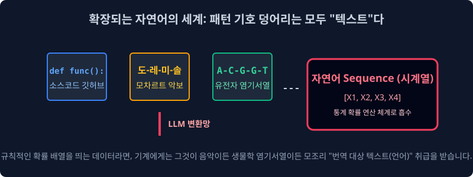
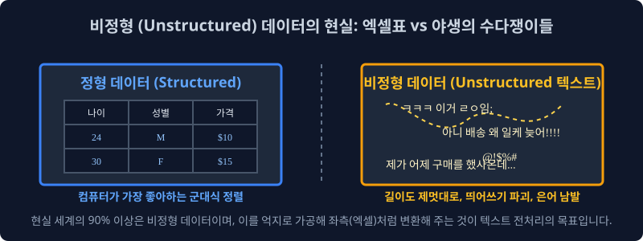

1.2 자연언어의 끔찍한 모호성과 텍스트 데이터 계층
기계에게 인간의 언어를 가르치는 것은 왜 극도로 복잡한 확률 편미분 방정식을 푸는 것보다 더 잔혹한 노가다 과정일까요? 이번 챕터에서는 인공지능 엔지니어들을 절망에 빠뜨리는 인간 언어 고유의 확률적 모호성 문제와, 텍스트 데이터만이 가지는 지독한 비정형(Unstructured) 구조에 대해 학술적으로 학습합니다.
1.2.1 컴퓨터가 멘붕에 빠지는 세계: 2가지 언어 대립

언어는 그 설계 철학과 소비 대상이 기계인지 인간인지에 따라 완전히 두 가지의 대척되는 생태계로 나뉩니다.
1. 컴퓨터가 사랑하는 성역: 인공 언어 (Artificial Language)
기계에게 가장 아름다운 언어는 파이썬(Python), C언어, 자바(Java)와 같은 프로그래밍 언어, 혹은 일상생활의 교통 신호등 같은 엄격한 인공 언어입니다.
- 완벽한 엄격성과 흑백논리: 조금의 예외도 허용하지 않습니다. 조건문에서
1 + 1은 언제나2입니다. - 감정의 부재: 코드는 화를 내거나 비꼬지 않습니다. 개발자가 문장 끝에 세미콜론(
;)이나 괄호 하나를 빼먹으면, 컴파일러는 고민조차 하지 않고 곧바로Syntax Error를 내뿜으며 시스템을 정지시킵니다. 기계는 이런 $100\%$ 예측 가능한 결정론적 환경에서만 안도감을 느낍니다.
2. 컴퓨터를 절망에 빠뜨리는 정글: 자연 언어 (Natural Language)
반대로 우리가 실생활에서 숨 쉬듯 쓰는 한국어, 영어 같은 자연어는 수학적으로 이 세상에서 가장 예의 없고 제멋대로인 끔찍한 데이터 구조입니다.
- 모호성(Ambiguity): “차 좀 빼주세요” 할 때 ‘차’가 마시는 차(Tea)인지 타는 차(Car)인지, 혹은 발로 걷어차란 뜻(Kick)인지, 단일 단어의 글자 모양만 봐서는 기계가 절대 모릅니다. 주변 문맥($Context$)을 수학적으로 곁눈질 조사하지 않으면 완벽하게 오답을 냅니다.
- 엄청난 유연성과 다형성: “밥 먹었어?”, “식사하셨습니까?”, “끼니는 때웠고?” 이 세 문장은 알파벳 스펠링 배열이 완전히 180도 다르지만, 사람의 뇌파에서는 목적 함수(의미)가 $100\%$ 똑같이 인식됩니다. 스펠링이 다르면 무조건 다르다고 튕겨내는 인공언어 체계에서는 상상도 할 수 없는 대혼란입니다.
[!WARNING]
📖 초심자를 위한 쉬운 해설: 1차원적인 로봇과의 소개팅
화난 연인이 팔짱을 끼고 “나 오늘 별로 안 예쁜 거 같지 않아?” 라고 물어봤다고 가정해 봅시다.
인공언어(계산기 뇌)를 탑재한 로봇은 이 문장을 곧바로 수식화하여If(예쁘다 == False): print("네 팩트 맞습니다.")로 연산해 대답했다가 영원히 이별 통보를 받게 됩니다.
자연언어를 처리한다는 것은, 이 엄청난 인간의 ‘숨겨진 돌려 말하기’와 ‘기만’, ‘다의어’를 뚫고 진의를 확률적으로 유추해 내야 하는 미친 난이도의 과정입니다.
1.2.2 텍스트 세계관의 무한 확장 (모든 기호 = 자연어)

과거의 고전 컴퓨터 학자들은 수백 년 동안 사람들의 입 밖에 나온 대화나 ‘위키백과’의 산문 글쓰기만을 자연언어로 취급했습니다. 하지만 2017년 구글의 트랜스포머(Transformer) 알고리즘이 눈부시게 폭발하면서 텍스트의 인식 범위가 문과적 사고방식을 완전히 파괴하며 무섭게 확장되었습니다.
1. 수학적 확률과 패턴이 있는 모든 기호 배열은 ‘텍스트(자연어)’다!
딥러닝 학계에는 엄청난 철학적 전환이 일어났습니다. “특정 문법적 규칙이나 일정한 확률 분포를 따르는 시계열 배열(Sequence)이라면, 그것이 한글 알파벳이든 악보의 콩나물 음표든 DNA 염기서열이든 모조리 ‘텍스트(자연어)’ 취급해서 언어 번역기에 학습시킬 수 있다!”
- HTML 및 Code 체계: 사람들이 깃허브(Github)에 짜둔 수십억 줄의 컴퓨터 코드 소스 기록(이것이 현재 코딩 AI인 Copilot의 원리입니다).
- 악보 및 기호 체계: 도-레-미-파 옥타브 순서가 일정한 확률 연쇄(마르코프 체인) 방식으로 존재하는 악보데이터.
- 생물정보학(Bio-Informatics): 아데닌(A), 시토신(C), 구아닌(G), 티민(T) 문자로 끝없이 이어지는 복잡다단한 인간 유전자 배열 시퀀스 정보.
인공지능 트랜스포머 입장에서는 모차르트의 위대한 악보도 기호가 일정하게 나열된 “수학적 외계어 자연어” 로 인식됩니다. 실제로 요즈음 챗GPT의 엔진 아키텍처에 악보를 통째로 쏟아부어 작곡을 시키거나, 신약 개발을 위해 단백질 구조 문자열을 예측하게 만드는 대통합의 마법이 구사되고 있습니다.
1.2.3 기계가 자연어를 정복하기 위한 4대 고급 임무 (NLP Tasks)
기계가 눈앞에 벌어진 문장들을 완벽히 해독했다고 산업계에서 인정받으려면 기계는 아래의 4가지 파이프라인 과제(Task)를 모두 해결해야 합니다.
| 수학적 임무 목표 (Goal) | NLP 정식 명칭 (Task) | 실제 비즈니스 머니타이제이션(수익화) 상황 |
|---|---|---|
| 화자의 카테고리 태깅 | 텍스트 분류 (Text Classification) | “왜 아직도 배송 출발 안 해요?” $\to$ 기계가 글을 읽자마자 CS 부서의 긴급 환불 불만 폴더 박스로 강제 배정함 |
| 핵심 맥락 압축 | 문서 요약 (Summarization) | 500페이지짜리 난해한 주주총회 회의록 PDF 문서 $\to$ 사장님을 위해 3줄로 핵심만 요약한 이메일 초안 자동 발송 |
| 문장 속 감정의 극성 도출 | 감성 분석 (Sentiment Analysis) | “영화 참~ 눈물 나게 재밌네요 중간에 자느라” $\to$ 비꼬기 확률 $85\%$ 로 계산하여 극도로 부정(Negative) 라벨링 (영화 평점 테러러 방어) |
| 언어-시각 대통합 추론 | 멀티모달 (Multi-modal) | “우주복을 입은 사과가 춤춘다” 라는 텍스트 수학 벡터 입력 $\to$ 해당 텍스트의 확률을 이미지(Pixel) 매트릭스 세계로 매핑하여 실제 고퀄리티 아트웍 이미지 출력 (Midjourney, DALL-E) |
1.2.4 사람을 미치게 하는 텍스트의 본질: 비정형(Unstructured) 쓰레기 더미

위의 위대한 4대 임무를 완수하기 위해 빅데이터 전문가들이 현실 세계의 텍스트를 막상 열어보면, 그 안에 숨겨진 지독한 비정형(Unstructured) 성질에 혈압이 오르게 됩니다.
- 엑셀과 정형 데이터(Structured Data): 컴퓨터가 환장하게 좋아하고 군침을 흘리는 밥입니다. 가로 행(Row)과 세로 열(Column)이 군대처럼 딱딱 맞춰진 나이, 성별, 가격표는 평균값이나 분산 같은 다차원 통계 지표를 뽑아내기 압도적으로 편안합니다.
- 텍스트 쓰레기장(Unstructured Data): 카카오톡 대화방 기록을 다운받아 분석해 본다고 가정합시다. 어떤 상대는
ㅇㅇ한 글자만 보냅니다. 어떤 화가 난 사람은 띄어쓰기 한 번 없이 엔터 연타로 A4용지 3장 분량의 괴문서를 발송합니다. 글자의 길이도, 국어사전 문법도, 감정도, 오타도 완벽히 제멋대로인 이 삐뚤어진 불순물 덩어리를 엑셀표와 같은 ‘정해진 차원의 숫자로 된 벡터 매트릭스’ 로 반듯하게 다림질(규격화)해 내지 못하면 모델은 뇌정지에 빠져 평생 단 하나의 통계도 돌리지 못합니다.
이 압도적인 비정형의 쓰레기더미 늪에서 텍스트를 건져 올려 반짝이는 다이아몬드 숫자로 가공해 내는 극한의 노가다 과정, 그것이 바로 다음 장에서 다룰 텍스트 마이닝 파이프라인(Text Mining Pipeline) 의 눈물겨운 여정입니다.